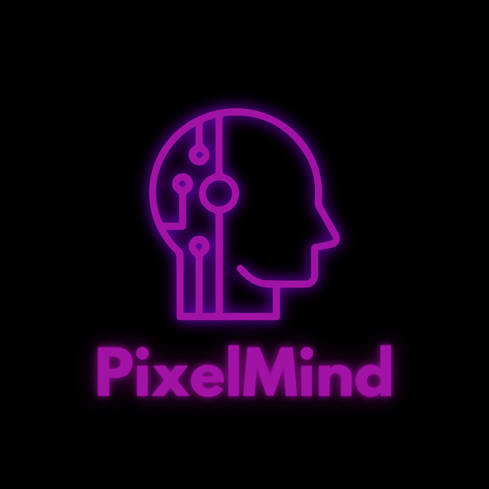

Plataforma web que centraliza el inventario de equipos, las incidencias, los préstamos y las solicitudes de servicio del instituto, con control de acceso por roles (RBAC). Proyecto del grupo PixelMind – ITI CETP 2026.
La tercera entrega (calidad, testing, métricas y manuales) es la fecha crítica del plan. Todo desvío del cronograma activa el plan de contingencia R2. Estado actual de las entregas: 1ª y 2ª completadas.
Ver cronograma →Primera entrega: relevamiento, factibilidades, FODA, requerimientos y planificación. Segunda entrega: validación metodológica, modelo esencial, diseño UML, riesgos, SSH con llaves y respaldos automatizados.
Ver avances →Cada entrega académica coincide con un incremento del sistema. El diseño de la 2ª entrega se construye sobre la especificación de la 1ª: todo lo planificado se valida, se modela y se implementa.
Grupo PixelMind; roles funcionales (Coordinador, Sub-coordinador, Integrante); paradigma de conformación y reglas de trabajo definidos en coordinación con tutoría UTULab.
Relevamiento con técnicas de captura de datos, estudio de factibilidades, FODA ponderado, especificación de requerimientos (IEEE 830 / AGESIC), lógica del sistema, modelo de desarrollo incremental y plan con Gantt + CPM/PERT.
Se vuelve sobre la 1ª entrega para validar el modelo de desarrollo, formalizar el diseño con UML (validación metodológica) y gestionar los riesgos. En paralelo, SO: SSH con llaves públicas, estrategia de respaldos 3-2-1 y scripts.
2ª entrega Ingeniería (PDF) → · 2ª entrega SO (PDF) → · 2ª entrega Ciberseguridad (PDF) →
Incremento 3 del plan: pruebas integrales, métricas de calidad, manuales de usuario y administración. Pendiente de planificar en detalle.
El SGRSI se desarrolla de forma integrada en Ingeniería de Software y Administración de Sistemas Operativos: los artefactos de una entrega alimentan a la otra.
De la especificación de requerimientos al diseño UML: modelo esencial, casos de uso, clases, estados, gestión de riesgos y seguimiento con Gantt.
Ir a la página de la materia →Del relevamiento del sistema operativo a un servidor endurecido: Ubuntu Server, red estática, LAMP, SSH con llaves y respaldos automatizados.
Ir a la página de la materia →Aplicación web en PHP + MySQL con arquitectura en tres capas, autenticación RBAC, inventario, tickets, préstamos y solicitudes. Corriendo en XAMPP.
Acceso al sistema →Integrantes y roles del proyecto, ITI – CETP 2026. Docente: Sindoni, Carina.
Figueroa, Ivo
Cédula: 5.711.315-1
ivofigueroa2169@gmail.com
Silvera, Bruno
Cédula: 5.736.659-4
bsilvera2008@gmail.com
Ramirez, Ramiro
Cédula: 5.791.624-0
ramironicolas483@gmail.com